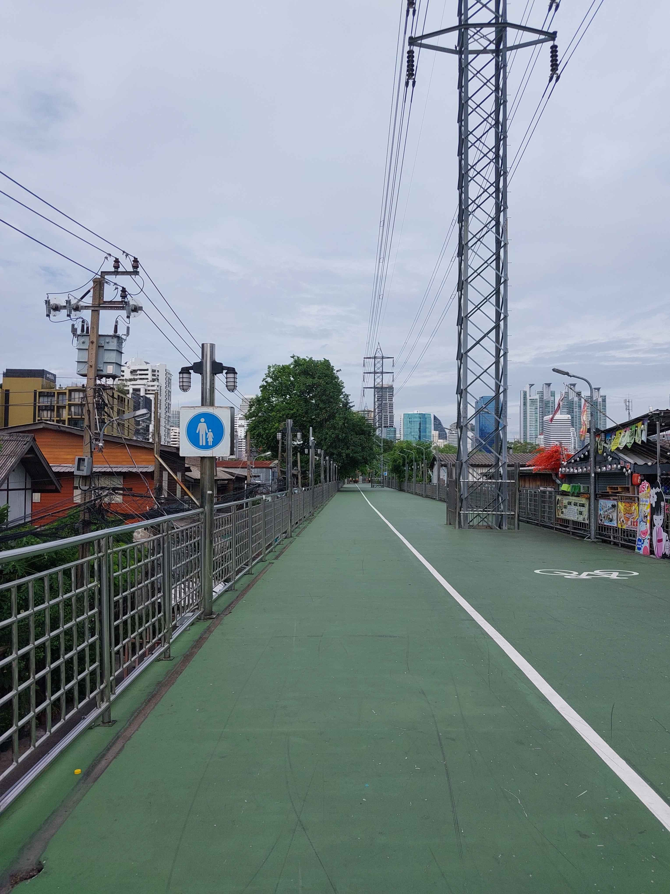

สะพานเขียว
26 มิ.ย. 2566
เหตุการณ์เกิดขึ้นเมื่อผมอยากเดินกลับบ้าน แต่ไม่อยากกับทางถนนพระราม4 เพราะไม่อยากเจอควันรถ
เพื่อนเลยแนะนำว่า ลองเดินกลับทางนี้ดูมั้ย แค่นั่งรถสองแถวไปลงหน้าสวนลุม แล้วเดินเข้าไปข้างใน
เพื่อไปออกประตูที่ใกล้ทางขึ้นสะพานเขียว เมื่อถึงสะพานเขียวผมเลยถ่ายรูปมา สะพานนี้เป็นสะพานที่เชื่อมกับสวนลุมไปถึงสวนเบญจกิติ
โดยผ่านหมู่บ้าน ทางด่วน และผ่านสวนป่าเบญจกิติ ใช้เวลาเดินค่อนข้างนานประมาณ 2 ชั่วโมง จนถึงสวนเบญจกิติ
แล้วผมกับเพื่อนก็เข้าไปพักที่ศูนย์การประชุมแห่งชาติสิริกิติ์ แล้วค่อยแยกกันกลับบ้าน
